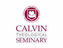

The 25 Best Online Masters Degrees in Theology
There a dizzying number and variety of graduate degrees available for Christian ministering. Out of all of those, the Master’s in Theology is perhaps one of the more dynamic, flexible, and foundational. Combining essential perspectives on the history of Christianity, Biblical hermeneutics, and practical pastoral training, the Master’s in Theology gives students a balance of both academic and real-world experience.
Featured Online Masters Degrees in Theology Degree Programs
- Liberty University: Master of Theology: Biblical Studies
- Ohio Christian University: MA in Ministry – Practical Theology
- Grand Canyon University: M.Div
Graduates can go on to become ministers and pastors, in addition to a number of other church-related vocations – counselors, missionaries, associate pastors, church administrators, and more. They may also choose to pursue doctorate studies. Below we’ve ranked our top 25 online programs.
Methodology:
- Affordability (1/3): the average out-of-state tuition per credit hour
- Flexibility (1/3): if the program offers additional specializations and/or an accelerated track
- Academic Reputation (1/3): the rank of the school’s parent institution according to US News
1. Saint Joseph’s College
Saint Joseph’s College offers an online MA in Theology that consists of 36 credits with three specializations to choose from: Advanced Diaconal Studies (a 30-credit program), Pastoral Theology, and Sacred Theology. Core courses include Foundations of Moral Theology, Introduction to the New Testament, Christology, Foundations in Catholic Theology, Introduction to the Old Testament, Theology of the Sacraments, and more. Students then take between 6-15 credits of concentration electives, depending on the track, to focus in a specific area of interest. Saint Joseph’s also has an accelerated track option that allows undergraduate students to substitute up to four graduate courses from the Master of Arts in Theology program in lieu of four comparable undergraduate courses in Theological Studies. With a curriculum founded upon Catholic doctrine, Saint Joseph’s program is in accord with the United States’ Catholic Bishops. The school also offers bachelors degrees in certificates in theology.
- Homepage
- Tuition per credit is $340.
2. Liberty University

Liberty University offers an online MA in theology that consists of 30 credits, with the opportunity to concentrate in one of six areas: Biblical Studies, Christian Apologetics (with a thesis option), Church History, Global Studies, Homiletics, and Theology. Core requirements are Modern & Contemporary Christian Thought, Biblical Theology, and a Theology Capstone. From there, students complete 15 credits in their concentration and an additional 6 credits of electives, giving students the ability to further customize their studies. In particular, Liberty’s program gives students insights into contemporary issues in the Christian church and prepare students for a variety of roles within the church upon graduation. For students interested in accelerating course work, Liberty also offers on-campus intensives, life experience credits, and a generous transfer policy.
- Homepage
- Tuition per credit is $380.
3 (tied). Hope International University
Hope International University offers an online MA in Ministry that consists of 42-48 credits, with the opportunity to concentrate in one of the following seven areas: Biblical Studies, Christian Leadership, Church Planting, Intercultural Studies (Missions), Pastoral Care, Spiritual Formation, and Worship. A highly customizable curriculum, students not only select classes within their concentration but also in the core. Some example classes include Bible Study Methods and Tools, Theology of Worship, Developing a Culture of Evangelism, CHM5213Leadership Styles and Principles, Developing the Spiritual Disciplines, Ministry Practices for the Church, and more. Hope International also offers students the option to complete a dual concentration track. To give maximum flexibility, course work is asynchronous and students have 24/7 access to online video lectures, online discussion threads, and an online drop box for assignments. A hybrid track is also available.
- Homepage
- Tuition per credit is $450.
3 (tied). Virginia Baptist College
Virginia Baptist College offers an online Master of Biblical Studies that consists of 60 credits, with a language and non-language track. The language track is made up of 42 core credits, 12 language credits, and 6 elective credits; the non-language track is made up of 42 core credits and 18 elective credits. Core requirements include Advance Hermeneutics, New and Old Testament, a four-part Theology series, Biblical Apologetics, Church History, Research and Writing, and an independent study, among others. Those in the language track choose between either Hebrew or Greek. Course work is designed for maximum convenience and flexibility, and VBC also offers hybrid options. Courses deliver throughout the year in one-week modules, after which students have 30 days to complete major projects, assignments, etc.
- Homepage
- Tuition per credit is $237.
5. Ohio Christian University
Ohio Christian University offers an online Master of Arts in Ministry that consists of 34 credits – 8 courses in the core and 4 courses in a concentration. Core requirements include Pastoral Care Giver, Worship in the Church, New and Old Testament History and Interpretation, History of Christian Thought, and a Ministry Capstone, among others. From there, students have the opportunity to concentrate in either Practical Theology or Pastoral Care and Counseling. With a course specifically devoted to the theology of John Wesley, this program tends toward Methodism but is open to students of all Christian denomination. Among the program goals are the study and analysis of Christian thought throughout history (and how it has affected culture), developing skills essential for ministry and pastoral care, and conducting original research that leads to enhanced ministry practices.
- Homepage
- Tuition per credit is $330.
6. Regent University
Regent University offers an online Master of Theological Studies that consists of 48 credits, with the opportunity to concentrate in one of the following four concentrations: Biblical Studies, Christian Theology, History of Christianity, and Interdisciplinary Studies. The course work breaks down as follows: 18 credit hours of core “context” courses, 12 credit hours of core “perspectives” courses, 15 credit hours of concentration courses, and 3 credit hours toward a capstone experience. Core requirements include Spiritual Formation Foundations, Biblical Hermeneutics, Old and New Testament, History of Christianity, and more. From there, students take a language elective in either Hebrew or Greek. A highly flexible program, students benefit from 6 possible entry dates in August, October, January, March, May, or June. Most students complete their degrees in 2.5-4 years, though they may take up to 5. Courses deliver in accelerated 8-week blocks.
- Homepage
- Tuition per credit is $495.
7 (tied). University of the Cumberlands
The University of the Cumberlands offers an online MA in Christian Studies that consists of 10 courses (30 credits). Core requirements include a two-part survey in Old Testament, a two-part survey in New Testament, and a two part series in Christian Theology. From there, students have the opportunity to concentrate in one of the following six tracks: Biblical Studies, Christian Education, Church Planting, Youth Ministry, Pastoral Ministry, and Missions. Students can also further tailor their degrees with additional electives. Course work is typically in as little as one year, though, thanks to a generous transfer policy of up to 9 credits, eligible students may further accelerate graduation time. In particular, the school aims to provide a firm theological foundation and develop the practical skills to serve as an effective leader in their church or church organization.
- Homepage
- Tuition per credit is $315.
7 (tied). Grand Canyon University

Grand Canyon University offers an online Master of Divinity that consists of 90 total credits. Core courses include New and Old Testament, Christian History, Elementary Greek and Hebrew, Christian Ethics, Pastoral Theology, Christian Apologetics, and more. In addition, three concentrations are available to allow students to tailor their studies according to areas of interest. Courses deliver in accelerated 8-week blocks, and students may further accelerate course work by taking advantage of the school’s generous transfer policy of up to 12 credits. GCU emphasizes maximum schedule flexibility, and asynchronous learning gives students the ability to complete course work on their own time. Note that this program requires a brief residency program in order to get one-on-one training for ministry.
- Homepage
- Tuition per credit is $355.
9. Apex School of Theology
The Apex School of Theology offers an online Master of Divinity that consists of 90 credits. Core requirements include Old and New Testament, The Passion Narratives in the Gospels, a two-part series in the History of Christian Thought, Christian Ethics, Crisis and Conflict Management in the Church, Professional & Legal Ethics in Counseling, The Church and Political and Economic Empowerment, The Life and Thoughts of Howard Thurman, and The Soul of Black Worship:Preaching, Praying, and Singing. Apex also offers several similar degrees, including an AS and MA in Christian Education, BA in Theology, MA in Christian Counseling, MA in Biblical Counseling, and a doctorate of Ministry. The course work generally falls along Baptist lines, and the school has a partnership with the Seminary Extension of the Southern Baptist Convention. Apex offers Federal Pell Grants, Federal loans, Veterans Administration Educational Benefits, Presidential Scholarships, and interest-free payment plans to qualified students.
- Homepage
- Tuition per credit is $233.
10. Luther Rice College & Seminary
Luther Rice College & Seminary offers an online Master of Arts in Apologetics that consists of 36 credits. Core requirements include Introduction to Biblical Hermeneutics, Foundations of Apologetics, Logic, Science and Faith, Philosophy of Religion, Major World Religions, Modern Religious Sects, and the option to either complete a practicum in apologetics or write a research thesis. Students may complete the degree in as little as four semesters, and eligible students may accelerate course work by taking advantage of Luther Rice’s transfer policy (up to 6 credits). As a degree in apologetics, this program is specifically designed to provide students with the theological foundation to defend the Christian faith on a rational and biblical basis. As such, it is more of a specifically academic degree than one designed for training. Graduates may go onto to become authors, missionaries, global evangelists, and more.
- Homepage
- Tuition per credit is $242.
11 (tied). Bethesda University of California
Bethesda University of California offers a Master of Divinity. Students can expect to complete their degree in three years, and course work may be accelerated by taking advantage of the school’s generous 15-credit transfer policy. In particular, Bethesda’s program emphasizes a balance between biblical, theological, and practical training and is designed to equip prospective ministers for effective training toward pastoral or missionary ministries. Program objectives include a thorough understanding of the history and context of the Christian church, learning to apply Biblical principles in everyday circumstances and ethical issues, development of essential pastoral skills through discipleship, leadership development, and evangelism. All course work is delivered via the popular Moodle platform, giving students the flexibility to complete work according to their own schedules.
- Homepage
- Tuition per credit is $251.
11 (tied). University of Dallas
The University of Dallas offers a Master of Theological Studies that consists of 37 credits – 22 core, 15 elective. Core requirements include Liturgy and Sacraments, Moral Theology, Systematic Theology, Church History, Theological Reflection, and Old and New Testament. Students may also choose to concentrate in either Biblical Studies or Catholic Secondary School Teaching in order to tailor their degrees toward a particular area of interest. Primarily teaching in the Catholic tradition (though open to individuals of all denominations), the program is accredited by the U.S. Conference of Catholic Bishops Commission on Certification and Accreditation and the National Certification Standards for Lay Ecclesial Ministers. It is also a member of the Association of Graduate Programs in Ministry and the Association for Clinical Pastoral Education. For interested students, the university offers a hybrid option, as well.
- Homepage
- Tuition per credit is $650.
13 (tied). Campbellsville University
Campbellsville University offers an online Master of Theology that consists of 30 credits. A highly customizable degree, core requirements vary upon choice of concentration: Biblical Studies, Pastoral Leadership, and Theological Studies. Examples classes include Journey into Christlikeness, Pastoral Ministries & Evangelism, Ethics of the Christian Faith, Gospel and Postmodernism, Pastoral Care in Human Crisis, Intergenerational Ministries, a supervised practicum, and more. Students also complete electives to further tailor their studies. In order to graduate, all students must complete a comprehensive Philosophy of Ministry Essay. Graduates are prepared to enter the ministry or a variety of church-related fields, including religious research, teaching, policymaking, social care, and counseling, among others. Thanks to a flexible, asynchronous delivery method, students can complete course work according to their own schedules and access material 24/7. Campbellville particular stresses real-world experiential learning. Most students complete their degrees within two years.
- Homepage
- Tuition per credit is $399.
13 (tied). Golden Gate Baptist Theological Seminary
Golden Gate Baptist Theological Seminary offers an online Master of Theological Studies that consists of 49 credits. The curriculum breaks down into 5 areas of study: Leadership Discernment, Biblical Foundations, Theological Foundations, Leadership Skill Formation, and general electives. Core requirements include Foundations for Ministry, Church History, Church Theology, Basic Evangelism, a Leadership in Ministry practicum, and more. Golden State also offers a generous 24-credit transfer policy, which may accelerate course work for eligible students. Program objectives include an understanding of the history and context of the Christian church; effective research, analysis, and interpretation of Biblical texts; articulation of Christian theological concepts against other Christian and non-Christian belief systems; and development of skills for church-based evangelism and discipleship.
- Homepage
- Tuition per credit is $320.
15. Columbia International University
Columbia International University offers an online MA in Theological Studies. Depending on background, students choose between two backgrounds: a 48-credit program for students with no previous studies in Bible or theology, or a 33-credit program for students with at least 30 semester hours of Bible, theology, or Church history. The 48-credit program breaks down as 21 credits in Bible and Theology, 9 credits in Worldview and Spiritual Formation, and 18 in a concentration, which include Greek, Hebrew, Biblical Studies, Theological Studies. The 33-credit program consists of 9 credits in Worldview and Spiritual Formation, 18 in a concentration (same as above), and 6 additional elective credits to tailor degrees. Columbia International’s program is designed to provide an interdisciplinary knowledge of biblical studies, Church history, intercultural studies, and theology to prepare students for ministry in the church and a variety of church-related areas.
- Homepage
- Tuition per credit is $455.
16. Saint Leo University
Saint Leo University offers an online MA in Theology that consists of 36 credits – 27 core, 9 elective. Core requirements include Hebrew Scriptures: History and Theology, Philosophical Foundations of Theology, Ecclesiology, Worship, Sacraments, & Liturgy, Christology, and History of Christianity, among others. The central objective of the program is to provide students with a firm foundation in biblical, systematic, historical, pastoral, and moral theology from which they can apply to a variety of church-relevant areas, including lay pastoral ministry, religious education, diaconal ministry, secondary education, chaplaincy, and further graduate study. Saint Leo’s curriculum is based upon the teachings of the Roman Catholic Church. Students benefit from maximum schedule flexibility that allows to complete course work on their own time.
- Homepage
- Tuition per credit is $450.
17 (tied). Cornerstone University
Cornerstone University offers an online Master of Arts in Biblical Studies that consists of 36 credits. Some classes include Biblical Hermeneutics, a three-part Systematic Theology series, and New and Old Testament Theology, in addition to several electives that give students the opportunity to tailor degrees to areas of interest. With an emphasis on flexibility, Cornerstone students may complete their degrees in as little as 2 years or take up to 4. (Students choose between a 3 credits per semester part-time plan or a 6 credits per semester full-time plan.) As a cohort-based program, students also benefit from a highly collaborative, intimate learning environment. Program objectives include effective biblical analysis and interpretation, promotion of personal spiritual growth, and comprehensive training in skills necessary to pursue a life of ministry.
- Homepage
- Tuition per credit is $435.
17 (tied). Southeastern University
Southeastern University offers an online Master of Divinity that consists of 72 credits that break down into 4 categories: Biblical Studies, Theological Studies, Practical/Theological Ministry, and general electives. Southeastern’s program is highly customizable, and students determine a large portion of core work in addition to electives. Some classes include Pentecostal Theology, Contemporary Theology, Systemic Theology, Christianity and the World Religions, Methods of Biblical Preaching and Teaching, Leadership Development, and Foundations for Cross-Cultural Ministry, among others. Motivated students can complete the program is as little as two years, though many also choose to pursue a 3-year track. Program objectives include strengthening foundational knowledge in the Bible and Church as a working organization; learning to apply Biblical principles to contemporary issues; and developing the necessary critical thinking, research, and writing skills needed to effectively lead church organizations and congregations.
- Homepage
- Tuition per credit is $495.
17 (tied). Crown College
Crown College offers an online Master of Divinity that consists of 72 credits. The curriculum is divided into Biblical & Theological Foundations, Foundations of Ministry Leadership, and general electives and emphasis options to tailor degrees according to areas of interest. Core requirements include Theology of Missions & Outreach, History & Theology of Christian Ministry, Pastoral Counseling, The Biblical Communicator, Teaching for Ministry, and more. Crown offers an impressive 7 concentrations in Theological Studies, Spiritual Formation, Pastoral Leadership, Executive Leadership, Pastoral Counseling , Intercultural Ministries, and Disaster & Emergency Management. All students must also complete a summative experience, which can be either a supervised capstone project or a calling and vocational assessment. Students typically complete the program in 4 years, though a generous transfer policy may accelerate course work for students with previous academic experience. All materials are designed for maximum flexibility.
- Homepage
- Tuition per credit is $415.
17 (tied). Fuller Theological Seminary
Fuller Theological Seminary offers an online MA in Theology and Ministry that consists of 80 quarter credits. The curriculum breaks down as following: 16 “Integrative” units, 16 “Interpreting” units, 12 “Theologizing” units, 8 “Ministry” units, 12 “Contextualizing” units, and 16 elective units. Core requirements include The Practice of Worship and Prayer, Interpretive Practices, The Church’s Understanding of God and Christ, Modern/Global Context, Engaging Global Realities, Engaging Human Diversity, and more. In addition, all students must complete a one year 1-on-1 apprenticeship to graduate in order to gain valuable real-world experience and mentoring. Note that this degree consists of 14 online courses and 6 hybrid, one-week residency courses. Students also spend 4 out of 6 quarters in a cohort, providing the program with a highly collaborative and intimate learning environment. With no language requirement and a quick two-year completion time, Fuller offers students maximum flexibility compared to most MDiv programs.
- Homepage
- Tuition per credit is $380.
21. Southwestern Assemblies of God University
Southwestern Assemblies of God University offers an online Master’s in Bible and Theology that consists of 36 credits – 24 core, 12 elective. Core requirements Leadership in Ministry, Pastoral Care, Research Literature and Technology, Issues in Contemporary Theology, Christian Worldview in a Pluralistic Society, Spiritual Dynamics in Ministry, Unity of the Bible, and more. (Note that the core itself is customizable.) From there, students choose electives according to a thesis or non-thesis track. Students on the non-thesis track must complete a comprehensive exam in order to graduate; students pursuing the thesis track must be going on to pursue a PhD. The university emphasizes students flexibility, and all course work may completed according to each student’s schedule demands.
- Homepage
- Tuition per credit is $575.
22. Southwestern Baptist Theological Seminary
Southwestern Baptist Theological Seminary offers an online Master of Theological Studies that consists of 36 credits. Some example classes include Applied Ministry, Background to Life/Times of Jesus, Baptist Heritage, Church History, Introduction to Expository Preaching, Globalization & Mission Strategies, and more. With both synchronous and asynchronous delivery options, students have the ability to interact in a live classroom setting or complete all course work according to their own schedules. By utilizing the popular Blackboard platform, Southwest Baptist provides students with a variety of intimate and collaborative learning mediums, including forums, live chats, streamlined student-to-teacher interaction, recorded video lectures, and more. The school also offers several related degrees to interested students: a Master of Divinity, Master of Arts in Christian Education, Master of Theological Studies + Missions, and a flex-path PhD. The seminary is also accredited by the Association of Theological Schools.
- Homepage
- Tuition per credit is $440.
23. Missouri Baptist University
Missouri Baptist University offers an online Master of Arts in Christian Ministry that consists of 39 credits – 24 core, 12 concentration, 3 capstone. Core requirements include Knowing God, Following God, Spiritual Formation, Christianity & Culture, Church History, New and Old Testament, History of Christian Thought, and more. Students also have the opportunity to tailor degrees through one of the following five concentrations: Pastoral Ministries, Urban Ministries, Biblical Counseling, Apologetic Studies, and Biblical Languages. Designed for both laymen and practicing pastors, Missouri Baptist’s curriculum is both foundational and practical to prepare students for real-world contemporary issues in the church. Courses deliver in accelerated 8-week blocks on an asynchronous basis, allowing students to complete course work on their own time. Typical graduation time is 2 years.
- Homepage
- Tuition per credit is $745.
24. Calvin Theological Seminary

Calvin Theological Seminary offers an online Master of Theology Studies that consists of 57 credits. Some example classes include The Church in Historical Context, Preaching Theory and Methods, Introduction to Missional Ministry, Pastoral Disciplines for Counseling Ministry, Evangelism & Cross-Cultural Ministry, Ethics and the Christian Life, and more. Online students can expect to complete the degree in 3 years (on-campus students complete in 2). Students may also choose to complete on-campus intensives to accelerate course work. Calvin Theological Seminary also offers a number of similar degrees (not all of which are available online): Master of Theology, Master of Divinity, Ecclesiastical Program for Ministerial Candidacy, and numerous certificates. All degrees are highly flexible and allow students to complete course work according to their own schedules. The degree is approved by the Association of Theological Schools.
- Homepage
- Tuition per credit is $456.
25. Dallas Theological Seminary
Dallas Theological Seminary offers an online Master of Biblical and Theological Studies that consists of 36 credits. The curriculum breaks down as follows: 9 credits in Bible Exposition, 9 credits in Theological Studies, 6 credits in Ministry & Research, and 12 credits of electives to tailor the degree to an area of interest. Core requirements include Bible Study Methods and Hermeneutics, Theological Method and Bibliology, Spiritual Life, Evangelism, a MBTS Summative Research Project, and The Story of Scripture, among others. This degree is designed for laymen who want to advance their knowledge of foundational knowledge of Biblical and Christian matters, but is not intended to lead to provide ministerial training. Students can expect to graduate in 2 years, though those with previous academic experience may accelerate course work via transferring up to 12 credits. All online students benefit from maximum schedule flexibility.
- Homepage
- Tuition per credit is $495.